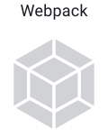
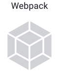

Об авторе
Меня зовут Дмитрий Ковегин, я — начинающий фронтенд‑разработчик. На курсе Яндекс.Практикум освоил HTML5, CSS3, JavaScript. Git, NPM, Webpack, GitHub. Было интересно разбираться в особенностях:
верстки (Flexbox, Grid); стилей (медиа‑запросы, анимация, псевдоклассы и псевдоэлементы); БЭМ; JS (ООП, ES6+, AJAX (Fetch API), работы с DOM и BOM, модулей, отладки в JS‑консоли, использования фреймворков) и регулярных выражений.
Люблю создавать структурированную документацию, адаптивные сайты наполненные svg‑анимацией. Хотите со мной связаться по вопросам разработки, пишите на почту dmitry.kovegin@gmail.com